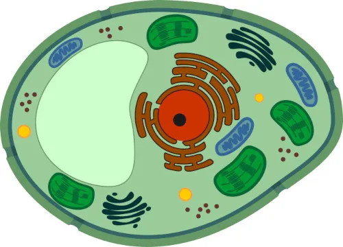

Agora que já entendemos a estrutura e as funções básicas da célula animal, é interessante observar que ela também guarda várias curiosidades que a tornam ainda mais fascinante. Alguns detalhes vão além do que aprendemos nos livros e mostram como a vida celular é complexa e surpreendente. Observe:
Agora que você aprendeu sobre mais sobre a Célula Animal, que tal realizar um quiz rápido e fácil para testar seus novos conhecimentos? (o gabarito se encontra no fim da página)
Sobre a célula animal, marque a alternativa incorreta.
(a) A célula animal, bem como todos os tipos celulares, apresenta membrana plasmática e citoplasma.
(b) A célula animal é uma célula do tipo eucarionte, apresentando, portanto, núcleo e organelas membranosas, como o cloroplasto.
(c) A célula animal apresenta lisossomos, organela relacionada com a digestão intracelular.
(d) A célula animal diferencia-se da célula bacteriana por apresentar, por exemplo, organelas celulares, como a mitocôndria.
(e) Como em todos os tipos celulares, na célula animal, a membrana plasmática proporciona permeabilidade seletiva, controlando o que entra e o que sai da célula.
Todas as estruturas descritas a seguir podem ser observadas em uma célula animal, exceto:
(a) Mitocôndria
(b) Lisossomo
(c) Ribossomo
(d) Plastídio
(e) Complexo golgiense
Qual organela celular é encontrada apenas na célula animal?
(a) Mitocôndria
(b) Ribossomo
(c) Lisossomo
(d) Cloroplasto
(e) Complexo golgiense
Sobre a célula animal, marque a alternativa incorreta:
(a) A célula animal é um tipo de célula eucarionte.
(b) A célula animal não apresenta cloroplastos, sendo essa estrutura típica de células vegetais.
(c) As células animais possuem organelas membranosas, como as mitocôndrias, responsáveis pelo processo de respiração celular.
(d) Centríolos, peroxissomos, retículo endoplasmático e lisossomos são organelas presentes na célula animal.
(e) A parede celular celulósica não é encontrada em todos os tipos de células animais, sendo observada apenas em células da pele, que necessitam de maior resistência.
Em uma prova de biologia, um aluno se deparou com a seguinte figura:

Analisando o desenho, o estudante concluiu que não se trata de uma célula animal, pois a célula acima:
(a) não apresenta parede celular.
(b) é eucariótica.
(c) apresenta características típicas de uma célula vegetal, como cloroplastos e vacúolo central.
(d) possui características que indicam que se trata de uma célula procariótica fotossintetizante, pois apresenta cloroplastos.
(e) não possui características exclusivas da célula animal, como mitocôndrias e retículo endoplasmático.